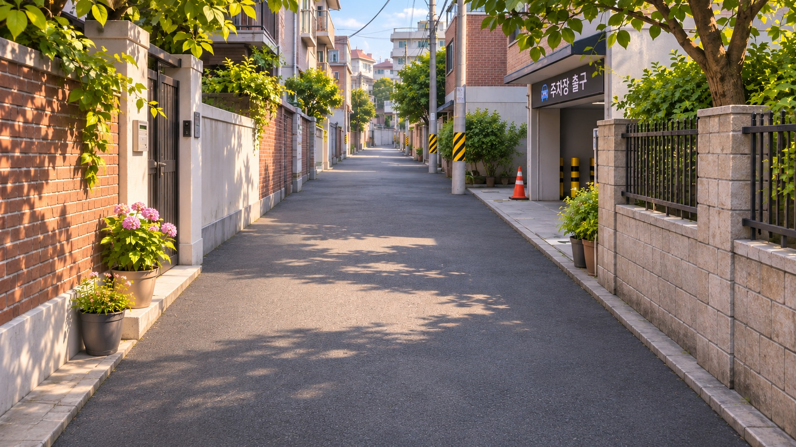
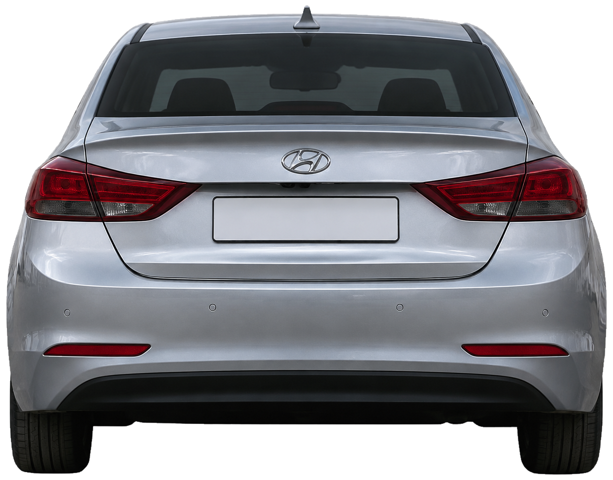
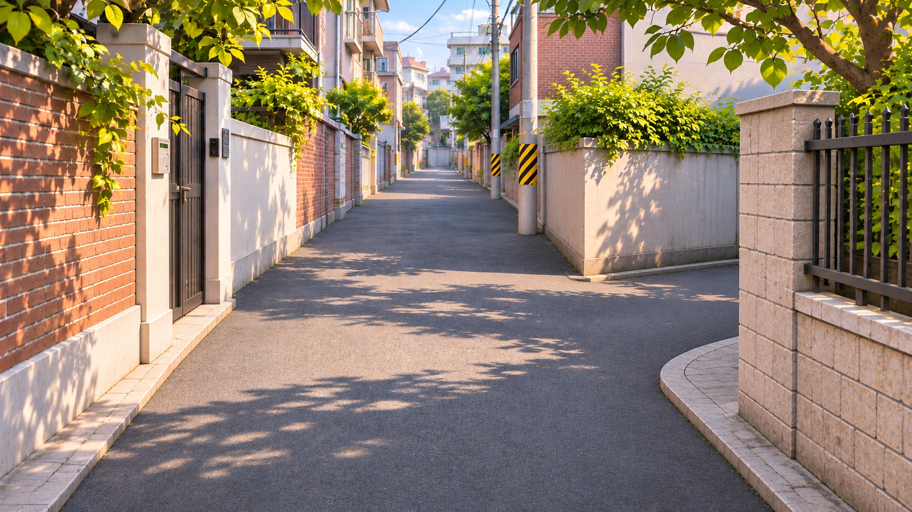
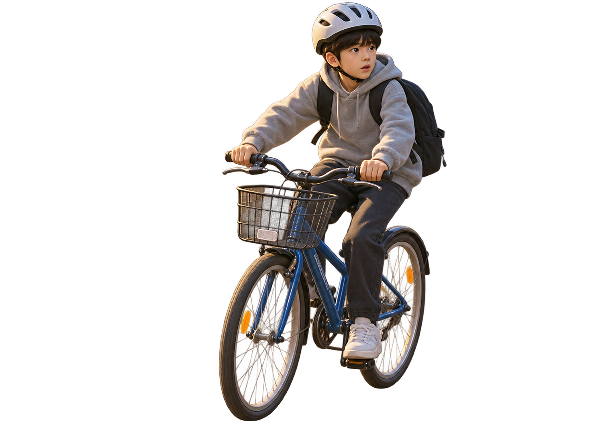
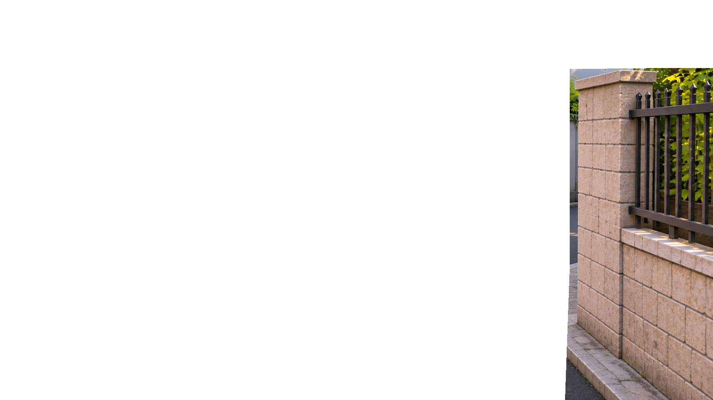
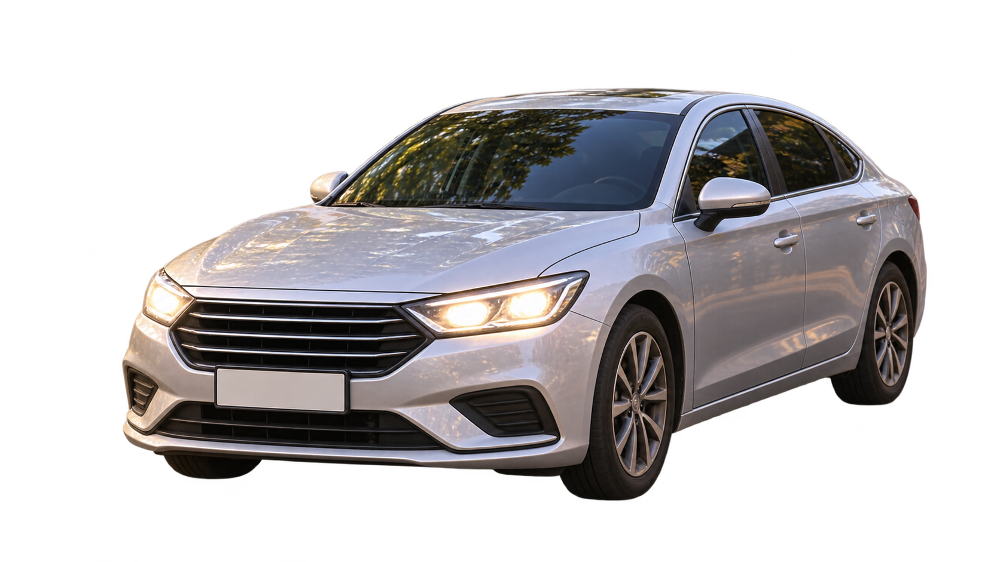
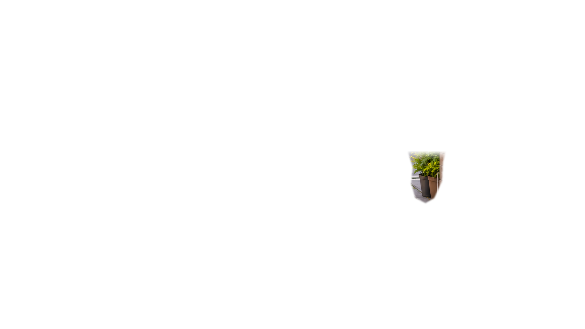

정지된 골목을 관찰하세요. 위험한 변화가 시작되면 멈춰!를 누르세요. 아무 변화가 없을 때는 누르지 않습니다.
준비연습 모드







시작 버튼을 누르세요
골목길 위험 발견
위험한 변화가 보일 때만 ‘멈춰!’를 누르세요. 장면은 자동으로 넘어갑니다.
정지된 골목을 관찰하세요. 위험한 변화가 시작되면 멈춰!를 누르세요. 아무 변화가 없을 때는 누르지 않습니다.







위험한 변화가 보일 때만 ‘멈춰!’를 누르세요. 장면은 자동으로 넘어갑니다.